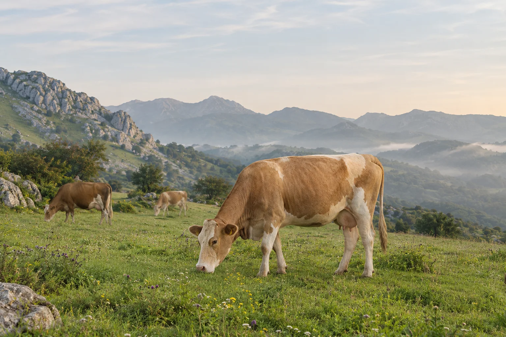
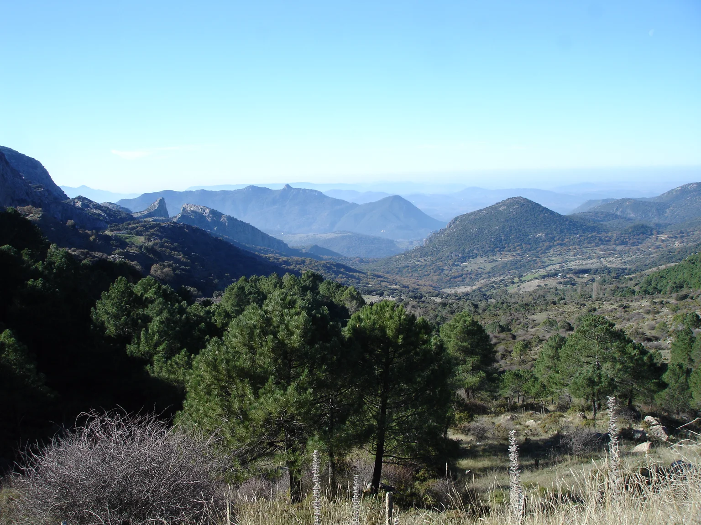
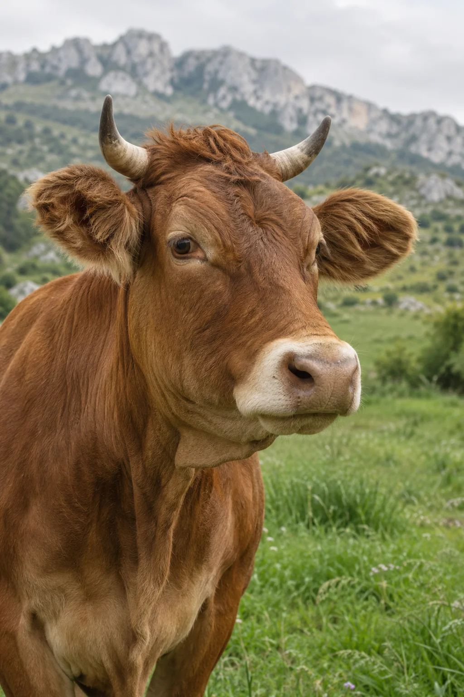

PEROD S. A. / TIERRA & ORIGEN
La tierra,
como origen.
Vaquería.
Sierra de Grazalema, Cádiz.
01 / IDENTIDAD
PEROD S. A.Una actividad
ligada al campo.
Perod S. A.
Vaquería.
La clasificación facilitada sitúa la actividad de Perod S. A. en la ganadería bovina, con el Parque Natural Sierra de Grazalema como referencia de ubicación.
La actividad ganadera02 / EL TERRITORIO
SIERRA DE GRAZALEMADonde el paisaje
marca el carácter.
Montañas calizas, vegetación y valles abiertos. Una mirada al entorno natural que da contexto a esta presentación.

Fotografía de referencia del paisaje de Grazalema.

03 / ACTIVIDAD GANADERA
El ganado.
La tierra.
El entorno.
Vaquería es la actividad indicada en el registro facilitado.
Esta presentación recoge esa clasificación general. La información específica sobre la explotación está pendiente de completar con su titular.
Las imágenes de ganado son recursos ilustrativos generados con IA. La fotografía del paisaje se utiliza como referencia del entorno natural.
04 / REFERENCIA GEOGRÁFICA
CÁDIZ, ANDALUCÍASierra de
Grazalema.
Parque Natural Sierra de Grazalema.
Es la referencia geográfica disponible para Perod S. A.
- Dirección exacta
- Pendiente de confirmación
- Teléfono
- Pendiente de confirmación